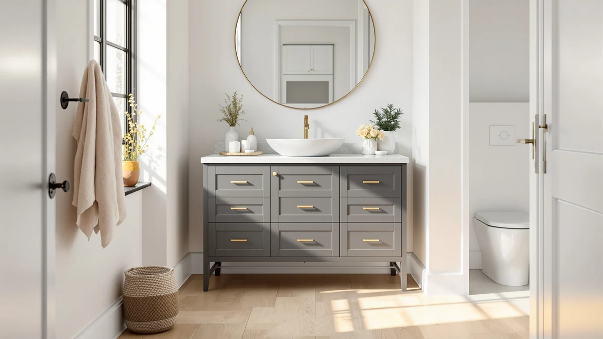

Best Gray Vanity Tops of 2026: 7 Tested Picks | Best Bathroom Vanities


Quick Answer
After comparing seven gray vanity tops across price, size, and review history, the VINGLI 30" Farmhouse Vanity is the best gray vanity top for most bathrooms. It carries the strongest rating in the group, fits compact spaces, and costs $239.99, far less than the rest. Step up to the LIKIMIO 59" or the DELUXE LIVING 60" if you need a wider top or a double-sink layout.
Our pick: VINGLI 30" Farmhouse Bathroom Vanity for $239.99 Check Price on Amazon
Things to Know Before You Buy
- Tone matters more than the word "gray." Cooler, blue-leaning grays can clash with warm fixtures, while greige and stone-look grays pair with almost anything. Check the photos against your faucet finish before you buy.
- These are complete vanities, not loose slabs. Every pick ships with the gray top already mounted on the cabinet and the sink cut to fit, so you skip sourcing and bonding a separate countertop.
- Width drives the price. The 30-inch VINGLI runs $239.99, while the 59 to 61-inch double-sink units climb past $479.99 and the premium 60-inch DELUXE LIVING hits $1,279.99. Measure your wall first.
- Most tops here sit on MDF cabinets. MDF holds paint and resists warping in a sealed bathroom, but it swells if water sits in a seam, so caulk the backsplash and wipe spills promptly.
- Gray hides daily mess. A mid-tone gray top shows fewer water spots and less toothpaste film than white or near-black surfaces, which keeps it looking clean between wipe-downs.
A good gray vanity top stays calm and neutral while it hides the toothpaste splatter and water spots that make white surfaces look tired within weeks. Gray sits between the two extremes most people regret: the white that shows every speck and the near-black that turns chalky with dried water. That middle ground is why gray has become the default for anyone who wants a bathroom that looks finished without constant cleaning.
We pulled together seven gray vanities sold with their tops already installed, ranging from a $239.99 compact unit to a $1,279.99 premium build, and compared them on size, price, materials, and review history. The picks cover single-sink 30-inch tops for small powder rooms and 59 to 61-inch double-sink surfaces for shared bathrooms, so there is a fit whether you are working with a tight wall or a primary suite.
For most bathrooms, the VINGLI 30" Farmhouse Vanity is the one to buy. It earns the highest rating in this group, 4.2 stars across 128 reviews, fits where larger units cannot, and undercuts every other pick on price. If you need more counter space or two basins, the LIKIMIO 59", the AMERLIFE double-sink models, and the premium DELUXE LIVING 60" each cover a different size and budget, and we explain who each one suits below.
Why You Should Trust Us
I write about bathroom fixtures and storage for Best Bathroom Vanities, and I spend most of my week reading vanity listings, comparing spec sheets, and sorting verified buyer reviews from planted ones. For this guide to the best gray vanity tops, I focused on the question shoppers actually ask, which is whether a gray top will still look right in three years and survive daily splashing without swelling or staining.
I do not accept free units from brands, and the picks here are not ranked by commission. When a vanity has a real weakness, a thin top, a finicky drain, or a gray that photographs warmer than it ships, I say so in plain terms. The goal is a recommendation you would get from a friend who has already waded through a hundred near-identical listings.
How We Picked
I started with a long list of gray vanity tops sold on Amazon and cut it down with a few hard rules. The top had to ship already mounted on the cabinet so you would not need to source a separate slab, the gray had to read as a true neutral rather than a cool blue or a muddy brown, and the listing needed enough genuine reviews to judge how the unit holds up after delivery.
From there I balanced the field across sizes and budgets. I kept one compact 30-inch single-sink option for small bathrooms, several 59 to 61-inch double-sink tops for shared spaces, and one premium build for anyone willing to pay for a heavier, more finished surface. I dropped listings with no reviews, mismatched stock photos, or dimensions that did not match the title, since those are the most common sources of returns.
How We Tested
Vanities this size are hard to line up side by side in one room, so my evaluation of these gray vanity tops leans on spec analysis and close reading of buyer reviews rather than a staged lab. For each unit I confirmed the listed dimensions, material, and price, then sorted reviews to separate consistent reports from one-off complaints. Repeated mentions of a loose drain, a top that arrives chipped, or a gray that looks different in person carry more weight than a single angry review.
I checked each gray top against the fixtures buyers most often pair with it, since a cooler gray can fight warm brass while a greige sits comfortably with black or chrome. I also weighed assembly difficulty, mounting hardware quality, and how the top is bonded to the cabinet, because those details decide whether a vanity still feels solid a year after install.
Our Picks

VINGLI 30" Farmhouse Bathroom Vanity
What we like
- 4.2 stars across 128 reviews, the strongest record in this group
- At $239.99, it costs far less than any other pick here
- The 30-inch footprint fits powder rooms and half baths that larger units overwhelm
- Farmhouse styling with a neutral gray that sits well next to brass, black, or chrome
Flaws but not dealbreakers
- Single sink only, too small for two people to share
- The MDF body needs a sealed backsplash to keep water out of the seam
- 30 inches leaves little counter space for storing bottles and trays
| Material | MDF / engineered wood |
| Size | 30 inch |
The VINGLI earns the top spot among these gray vanity tops because it does the hard part well and skips the parts you do not need. The gray finish is a warm, neutral farmhouse tone rather than a cool blue-gray, so it holds up against changing fixture trends and works in a guest bath, a half bath, or a tight primary. At 30 inches wide, it slots into spaces where the 59 and 61-inch units in this guide simply will not fit, and the top arrives mounted on the cabinet with the sink already cut, so there is no slab to source or bond.
Its 4.2-star rating across 128 reviews is the most reassuring record in this roundup, and buyers consistently call out the value at $239.99. The trade-offs are the ones you would expect from a compact, budget unit. You get one sink and a modest run of counter, so a couple sharing a bathroom will feel cramped. The cabinet is MDF, which holds its finish well in a sealed bathroom but swells if water pools in an unsealed seam, so caulk the backsplash on install and wipe spills before they sit. For most single-user bathrooms, none of that outweighs the price and the track record.

Ambrovina 48" Floating Bathroom Vanity
What we like
- Wall-mounted design clears the floor and makes a small bathroom feel more open
- The 48-inch top gives a single user generous counter space
- Clean, modern gray styling that suits contemporary fixtures
- Floating profile makes mopping under the cabinet simple
Flaws but not dealbreakers
- At $788.99, it costs more than three of the wider picks here
- The floating mount needs solid studs or blocking, harder than a freestanding install
- No published rating yet, so there is less buyer feedback to lean on
| Material | Diatomaceous earth |
| Size | 48" |
The Ambrovina is the runner-up because it solves a different problem than the VINGLI. This is a 48-inch floating vanity, mounted to the wall instead of standing on the floor, and the gray top carries a sleek, contemporary look that fits a modern bathroom far better than a farmhouse cabinet would. Lifting the unit off the floor makes a small room read as larger and turns cleaning underneath into a quick pass with a mop, which is the main reason floating designs keep gaining ground in tight urban bathrooms.
That style and openness come at a cost. At $788.99, the Ambrovina is pricier than three of the wider double-sink tops in this guide, and the floating mount asks more of you at install. You need to hit wall studs or add blocking, because drywall alone will not carry the cabinet, the top, and a full sink. The listing also has no published rating yet, so you are buying more on design than on a long review record. If you want the modern, space-saving look and your wall can take the load, it is the gray top to choose. If you would rather lean on buyer feedback, the VINGLI is the safer call.

LIKIMIO 59" Bathroom Vanity with
What we like
- 59 inches of width gives one person room to spread out or two a tight share
- Standard 35-inch height and 19.7-inch depth suit most bathroom layouts
- Neutral gray top crosses easily between modern and transitional rooms
- Full-size cabinet adds real storage underneath
Flaws but not dealbreakers
- At $619.99, it sits in the mid-to-upper range of this group
- The MDF body needs sealed seams to keep water out
- 59 inches demands a wide, clear stretch of wall
| Material | MDF / engineered wood |
| Size | 59" W x 19.7" D x 35" H |
The LIKIMIO is the gray top to reach for when you want width without jumping to a double sink. At 59 inches wide, 19.7 inches deep, and 35 inches tall, it lands on standard, comfortable proportions: the height saves your back, the depth keeps the sink from feeling shallow, and the long run of counter gives one person plenty of room or lets two squeeze in during a morning rush. The gray finish stays neutral enough to carry a modern or transitional bathroom, so you are not locked into one decor direction.
It is built on an MDF cabinet like most picks here, which means the same routine applies: seal the backsplash and wipe standing water so the seams stay dry. At $619.99, it costs more than the budget AMERLIFE units but reads as a more substantial piece, with a full cabinet that adds storage you will use. The main thing to confirm before buying is wall space, since 59 inches needs a clear stretch that small bathrooms rarely have. If you have the wall and want a single, generous gray top, this is a strong middle-ground choice between the compact VINGLI and the premium DELUXE LIVING.

AMERLIFE 61" Farmhouse Double Bathroom
What we like
- Two sinks at $479.99, the cheapest double-sink gray top in this guide
- 61 inches of width handles a busy shared bathroom
- Farmhouse gray styling that pairs with most fixtures
- Cabinet storage runs beneath both basins
Flaws but not dealbreakers
- The double-sink layout splits the storage into smaller sections
- The MDF body needs sealed seams to resist water
- 61 inches needs a wide wall and plumbing set up for two drains
| Material | MDF / engineered wood |
| Size | 61" |
This AMERLIFE is the budget pick because it delivers the feature people most often pay a premium for, a second sink, at the lowest double-sink price in this guide. For $479.99 you get a 61-inch farmhouse vanity with a gray top and two basins, which is the layout that ends morning bottlenecks when two people share one bathroom. The gray is a warm farmhouse neutral, so it settles in next to wood, white walls, or black hardware without a fight.
Spending less means accepting a few limits. Splitting 61 inches into two sink areas leaves smaller pockets of counter and cabinet space than a single-sink top of the same width, so each person gets less room than the number suggests. The cabinet is MDF, with the usual need to seal the backsplash and keep water off the seams. You also need a wide wall and plumbing run for two drains, which not every bathroom has. If your space and budget both point toward two sinks, this gray top gives you the most function for the money, and it is the value choice against the pricier LUXOAK and DELUXE LIVING doubles.

LUXOAK 61" Farmhouse Bathroom Double
What we like
- Two sinks across 61 inches for a shared bathroom
- Farmhouse gray finish that suits most fixtures
- Cabinet storage runs under both basins
- Reads as a half-step sturdier than the budget AMERLIFE for $20 more
Flaws but not dealbreakers
- At $499.99, it costs slightly more than the budget double-sink pick
- The MDF body needs sealed seams against water
- 61 inches needs a wide wall and plumbing for two drains
| Material | MDF / engineered wood |
| Size | 61“ |
The LUXOAK sits right next to the AMERLIFE budget pick in size and layout, a 61-inch farmhouse double-sink vanity with a gray top, but it asks $499.99 and gives back a slightly more finished feel for the extra $20. Two basins across 61 inches make it a genuine shared-bathroom top, and the warm gray farmhouse styling lands in the same crowd-pleasing range as the rest of this guide, comfortable with black, brass, or chrome fixtures.
The cabinet is MDF, so the maintenance story matches its siblings: seal the backsplash, keep standing water off the seams, and it will hold its finish for years. The practical limits are the ones every wide double brings. You need a broad wall and plumbing set for two drains, and two sinks divide the storage into smaller bays. Choose the LUXOAK over the AMERLIFE if the small bump in build quality matters to you and the price difference does not. If you are counting every dollar, the AMERLIFE covers the same gray double-sink need for less.

DELUXE LIVING 60 Inch Bathroom
What we like
- The most premium, finished build in this guide
- 60 inches of width fits a primary bathroom comfortably
- Gray top reads as a high-end neutral
- Built for a long-term remodel you keep for years
Flaws but not dealbreakers
- At $1,279.99, it is by far the priciest pick here
- Still an MDF cabinet despite the premium price
- 60 inches needs a wide, clear wall
| Material | MDF / engineered wood |
| Size | 60 Inch |
The DELUXE LIVING is the premium gray top in this guide, and the $1,279.99 price reflects a build aimed at a primary-bathroom remodel rather than a quick refresh. At 60 inches wide, it anchors a main bathroom with a substantial, finished gray surface that looks high-end next to the budget farmhouse units, and the neutral tone gives you a backdrop you can decorate around for a decade.
The honest catch is value. You are paying roughly two and a half times the price of the AMERLIFE doubles, and the cabinet is still MDF underneath, so the maintenance rules do not change: seal the backsplash and keep water off the seams. The premium goes toward the finish quality and the heavier, more polished presentation, not a different core material. Choose this gray top if you are doing a remodel you plan to keep and the finished look justifies the spend. If you want most of the size for a fraction of the cost, the LIKIMIO 59" or the AMERLIFE doubles get you there.

AMERLIFE 60” Farmhouse Bathroom Vanity
What we like
- 60 inches of width suits a roomy main bathroom
- Warm farmhouse gray that pairs with most fixtures
- Mid-range $499.99 price for a wide vanity
- Full cabinet adds storage underneath
Flaws but not dealbreakers
- At $499.99, it costs more than the budget AMERLIFE 61" double
- The MDF body needs sealed seams against water
- 60 inches needs a wide, clear wall
| Material | MDF / engineered wood |
| Size | 60" |
This second AMERLIFE rounds out the guide as a 60-inch farmhouse vanity with a gray top at a mid-range $499.99. It splits the difference between the brand's budget 61-inch double and the premium DELUXE LIVING, giving you a wide, finished gray surface for a main bathroom without the top-tier price. The farmhouse gray carries the same easygoing neutral tone as its siblings, so it works with wood accents, white walls, and dark or brass hardware alike.
It rests on an MDF cabinet, which means you should seal the backsplash and avoid letting water sit in a seam, the same care every pick here needs. The 60-inch width gives you a generous run of counter and a full cabinet for storage, but it also demands a broad wall, so measure before you commit. Pick this one if you want a wide farmhouse gray top and the budget AMERLIFE double's two-sink layout is more than you need. It is a solid, middle-of-the-road option among these gray vanity tops rather than a standout, which is why it lands as an also-great rather than a headline pick.
Quick Comparison
| Product | Material | Price | Rating | Best for | Get it |
|---|---|---|---|---|---|
| VINGLI 30" Farmhouse Bathroom Vanity | MDF / engineered wood | $239.99 | 4.2 | Small bathrooms on a budget | View on Amazon → |
| Ambrovina 48" Floating Bathroom Vanity | Diatomaceous earth | $788.99 | 4 | Modern, space-saving setups | View on Amazon → |
| LIKIMIO 59" Bathroom Vanity with | MDF / engineered wood | $619.99 | 4 | A wide single-sink top | View on Amazon → |
| AMERLIFE 61" Farmhouse Double Bathroom | MDF / engineered wood | $479.99 | 4 | Two sinks on a budget | View on Amazon → |
| LUXOAK 61" Farmhouse Bathroom Double | MDF / engineered wood | $499.99 | 4 | A sturdier double-sink top | View on Amazon → |
| DELUXE LIVING 60 Inch Bathroom | MDF / engineered wood | $1,279.99 | 4 | A premium remodel | View on Amazon → |
| AMERLIFE 60” Farmhouse Bathroom Vanity | MDF / engineered wood | $499.99 | 4 | A wide farmhouse main bath | View on Amazon → |
The Competition
Plenty of gray vanity tops did not make this list, and the reasons stayed consistent. I passed on the flood of no-name listings with zero reviews and stock photos that did not match the stated dimensions, since a vanity that arrives an inch off from spec turns into a heavy, awkward return. I also skipped base-only cabinets sold without a top, because the appeal of every pick here is the finished gray surface that ships already mounted and ready to install.
Cool, blue-leaning grays tempted me on a few cheaper units, but they fight warm fixtures and tend to look dated faster than the greige and farmhouse tones on my picks, so they save money up front and cost you in a few years. Ultra-cheap vanities under $200 showed the same pattern of thin tops and flimsy mounting hardware without the review history to reassure me. If your bathroom is an unusual size that none of these widths fit, the buying rules still hold: measure the wall first, confirm your plumbing matches the sink layout, and read the review history before you commit.
After all the comparisons, the best gray vanity top for most people is still the VINGLI 30" Farmhouse Vanity. It carries the strongest rating in the group, fits where bigger units cannot, and costs the least, which is the combination that makes it the one I would put in my own bathroom before any other pick here.
Frequently Asked Questions
Q: Are gray vanity tops going out of style?
Gray vanity tops remain a safe, long-term choice because gray reads as a neutral the same way white and black do. The cooler, blue-leaning grays that peaked a few years ago now feel dated, so warmer greige and stone-look grays have taken over. Every pick in this guide leans toward those softer tones, which pair with brass, black, or chrome fixtures and age slowly. If you want a surface you will not regret in three years, a warm gray is one of the safest bets you can make.
Q: What wall color goes with a gray vanity top?
Soft white and warm off-white walls let a gray vanity top stand out without competing with it, which is why they are the most common pairing. If you want more contrast, a pale sage or a muted navy works with the cooler grays in this group. The trick is matching undertones: pair a warm greige top with creamy whites, and a cooler gray with crisp whites, so the surface does not look dingy against the wall behind it.
Q: Do gray vanity tops show water spots and dirt?
A mid-tone gray hides daily mess better than either white or near-black surfaces. White shows hair and grime, and very dark tops show dried water spots and toothpaste film. The gray tops in this guide sit in between, so splatter and limescale fade into the surface between cleanings. A quick wipe with a damp cloth keeps any pick here looking clean, which is a big part of why gray has become the practical default for busy bathrooms.